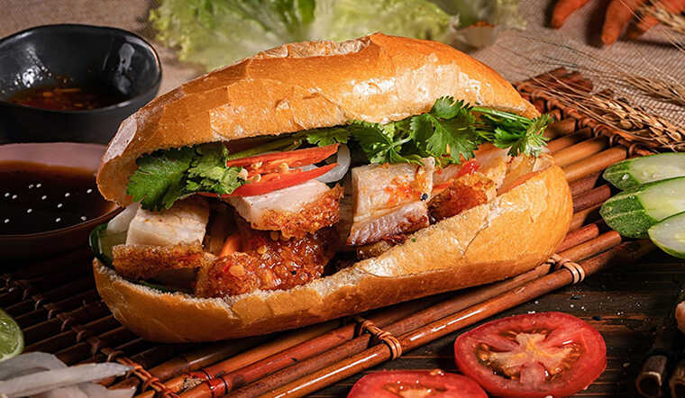

R
Shrimp and Chorizo Pealla
September 14,2016

Bread is considered as a popular fast food and is usually consumed in breakfast or any snack of the day. Due to the reasonable price, bread has become a favorite dish of many people